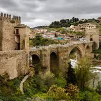
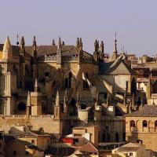
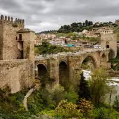
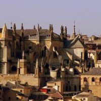

Toledo
 



En este paseo recorreremos el centro histórico de Toledo haciendo hincapié en los lugares más famosos que determinan cada una de las tres culturas, donde cada calle y rincón tienen una historia que contar.
Además de recorrer el centro histórico de Toledo nos adentraremos en los 3 lugares claves de la ciudad, uno de cada cultura: la Mezquita del Cristo de la Luz (construida en el año 999, durante el esplendor del califato de Córdoba), la Sinagoga de Santa María la Blanca (construida en el año 1180) y la Iglesia de Santo Tomé (en su interior se encuentra el famosísimo cuadro de El Greco, El entierro del Conde de Orgaz).
Después de la visita comprenderéis por qué en Toledo la historia y la leyenda confluyen sutilmente; la ciudad siempre se consideró tolerante.